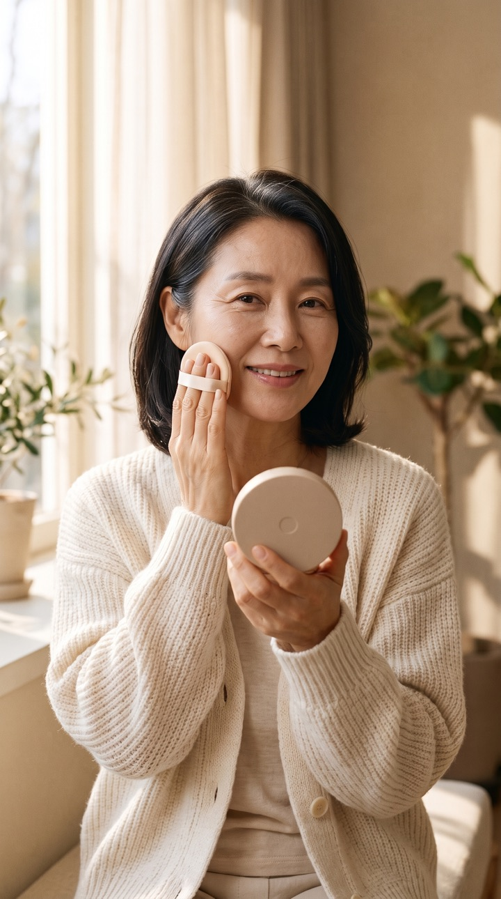
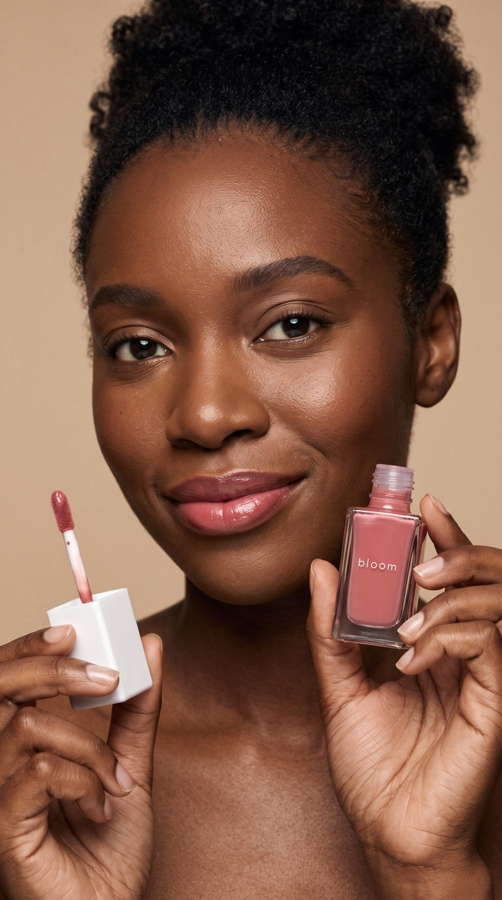
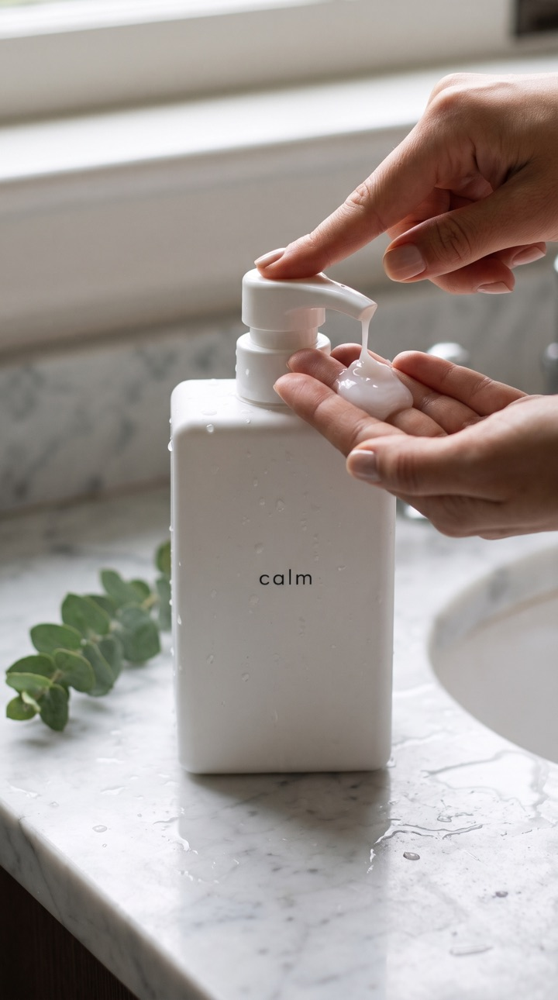

AI 모델컷 만드는 법: 제품 사진 1장에서 쓸 수 있는 컷까지 5단계
이 글에는 AI를 기반으로 생성된 가상인물 사진이 포함되어 있습니다. 사진 속 인물과 제품은 모두 AI로 만든 가상입니다.
모델컷은 「누가, 언제, 어떻게 쓰는지」를 보여 주는 사진입니다. 작은 브랜드는 촬영 한 번 잡기도 어렵다 보니 AI로 만드는 경우가 늘었습니다. 2026년 10월 30일에 HEONLOG가 가상 제품 4개로 모델컷 4장과 짧은 영상 2개를 만든 기록을 바탕으로, 순서와 실패한 곳을 그대로 적습니다.
1단계. 제품 기준 사진부터 준비합니다
AI가 따라 그릴 원본입니다. 정면에서 찍고, 제품 글자와 로고가 반사 없이 또렷하게 읽혀야 합니다. 뚜껑 모양, 용기 재질(유광·무광), 색이 잘 보이면 좋습니다. 이 사진이 흐리면 결과도 흐립니다. 그리고 허락받은 제품만 씁니다. 남의 브랜드 제품을 가져와 만들지 않습니다.
2단계. 장면을 한 줄로 정합니다
「예쁜 사진」이 아니라 고객이 「나도 저렇게 쓰겠다」고 느낄 장면이 목표입니다. 저희는 이렇게 정했습니다.
- 쿠션 팩트: 50대 여성이 아침 창가에서 퍼프로 볼을 두드리는 장면
- 립틴트: 30대 여성이 병을 턱 옆에 들고 있는 장면
- 샴푸: 세면대에서 펌프를 눌러 손바닥에 덜어 내는 손 장면
- 선크림: 30대 남성이 아침 욕실 거울 앞에서 손끝에 짜는 장면
고객과 비슷한 나이·피부톤을 고르고, 얼굴이 안 나오는 손 장면도 하나 넣으면 여러 곳에 다시 쓰기 좋습니다.
3단계. 주문문에 제품 모양을 못 박습니다
장면 설명보다 중요한 것이 「제품은 기준 사진과 똑같이」라는 문장입니다. 모양, 색, 뚜껑, 글자의 철자와 위치까지 적습니다. 실제로 쓴 주문문과 칸 나누는 법은 제품 사진 AI 프롬프트 글에 따로 정리했습니다. 저희는 힉스필드에서 Nano Banana 2.1(사진)과 Kling 3.0 Pro(영상)를 썼고, 사진 1장에 2크레딧, 5초 영상 1개에 8.75크레딧이 들었습니다(2026년 10월 기준).

가상인물
가상인물
AI 생성4단계. 확대해서 원본과 대조합니다
AI는 제품 위 글자를 자주 깨뜨립니다. 만든 뒤에는 꼭 확대해서 철자, 글자 위치, 뚜껑 모양을 기준 사진과 하나씩 비교합니다. 저희 4장의 판정은 이랬습니다.
- 립틴트: 「bloom」 철자와 위치가 선명. 바로 쓸 수 있음.
- 샴푸: 「calm」이 선명하고 물방울이 글자를 가리지 않음. 쓸 수 있음.
- 쿠션: 팩트 모양과 가운데 원이 맞음. 원이 살짝 아래로 내려간 정도라 쓸 수 있음.
- 선크림: 「daylight」가 읽히지만 작고 흐림. 기준은 돌려 여는 뚜껑인데 똑딱 뚜껑으로 바뀜. 욕실 분위기 컷으로는 쓰되 제품 클로즈업으로는 쓰지 않기로 함.
네 장 모두 다시 만들지 않고 첫 결과로 판정했습니다. 다만 넷 중 하나는 제품이 원본과 달랐습니다. 대조를 건너뛰면 이런 차이가 그대로 광고에 나갑니다.
5단계. 영상은 제품이 안 움직이는 컷으로 만듭니다
사진을 짧은 영상으로 움직일 때는 제품이 손에 들려 흔들릴수록 글자가 깨질 위험이 큽니다. 그래서 가장 잘 나온 립틴트 사진은 영상에서 뺐고, 병이 세면대에 서 있는 샴푸 컷과 제품에 글자가 없는 쿠션 컷을 골랐습니다. 주문문에는 카메라를 고정하고 줌을 쓰지 말라고 적었습니다.
- 샴푸 5초: 처음부터 끝까지 「calm」이 그대로였습니다. 다만 내용물이 액체가 아니라 크림 거품처럼 나와 샴푸로는 조금 어색했습니다.
- 쿠션 5초: 4.1초쯤 퍼프가 손에서 사라졌습니다. 원본은 쓸 수 없어서 사라지기 전 앞 3.8초만 잘라 썼습니다.
영상은 끝까지 한 프레임씩 넘겨 보는 것이 좋습니다. 저희 경우에는 시작 부분은 멀쩡했고 문제가 4초가 지나서 나왔습니다.
마지막으로: 표시
AI 가상 모델이 제품을 추천하는 광고라면 2026년 6월부터 「가상인물」 표시 기준이 있습니다. 위치와 문구는 가상인물 표시 글에 정리했습니다. 사용 전후 모습이나 제형을 실제보다 좋게 만들지 않는 것도 함께 지켜야 합니다.